EmbeddingGemma 2：统一而高效的多模态表示
这篇论文由 Google EmbeddingGemma 团队提出，Henrique Schechter Vera 与 Sahil Dua 为共同第一作者，研究怎样让一个可按模态加载的小型编码器直接理解文本、图像、视频和音频，并把混合输入压成同一个语义空间中的向量。论文于 2026 年 10 月 27 日 15:00 UTC 首次提交，原文入口为 EmbeddingGemma 2。官方模型文档在本轮核验时可访问；这里没有执行模型训练或作者评测复现。本文在 2026 年 10 月 30 日阅读首版全文，数值均对应论文报告的实验。
用转写和图片描述把多模态输入改成文本，会增加计算开销并丢失细粒度视觉信息及非语言声音；直接改造大型多模态语言模型得到的嵌入器又往往有数十亿参数，难以满足低时延、高吞吐、隐私保护和离线端侧应用的需求。
1. 背景和问题
嵌入模型承担的任务，是把一个复杂输入变成固定长度向量，使相近含义在空间中靠近。它在搜索系统里决定候选是否进入下一阶段，在 RAG 里决定哪段材料能够成为回答依据，也可以成为聚类、分类、相似内容发现及重排的特征。与生成模型逐字输出相比，单向量检索可以把候选内容提前离线编码，在线只计算查询向量及相似度，因此在大规模检索和端侧应用中具有独立价值。不过，模型能输出向量，并不意味着这个向量已经覆盖用户真正需要的信息：如果输入中同时有画面、语音、环境声和文字描述，模型必须理解它们之间的关系，不能把每一段各自总结后就假定信息无损。
论文首先指出文本模型的两类缺口。第一类来自输入转换：音频先过自动语音识别，图片先过描述生成，再进入文本嵌入器。这套链路容易部署，却把识别器和描述器的错误固定在检索之前。音频里的重音、口音、同音词和环境声未必能用转写完整表达；商品图片上的细节、文档版面或图表位置关系，也不一定进入一段自然语言说明。转换后的检索器即使很强，也无法找回已经在上游丢掉的信息。第二类来自任务表达：简单图文双塔可以把图和文本放到同一个空间，但通常不能原生读取交错的混合输入，因此难以表达“这幅图中满足文字约束的对象”或“这段视频中与声音共同指向的事件”等组合语义。
近年的办法是复用多模态大语言模型。它们已经能够接受交错的文字、图片、声音和视频，把最后的隐状态池化成向量即可构造统一编码器。问题是能力与规模通常一起增长，数十亿参数会使高吞吐内容索引、低时延在线查询和手机离线运行承受较高成本。对于推荐系统，这个差异尤其实际：内容池编码可以批量离线做，但大量新内容、实时查询和用户侧上下文仍需持续计算；若希望把部分隐私数据留在设备上，模型大小、加载方式与内存占用都变成约束。作者因此没有把研究目标定义为单纯追逐最高基准分，而是寻找覆盖多模态、保留检索质量和降低资源要求之间的可执行组合。
EmbeddingGemma 2 的核心边界是“通用内容表示”，并非完整推荐器。它没有根据某个用户的长期点击日志直接预测下一次购买，也没有给出 CTR、留存或 GMV 的线上实验。把商品视频、评论文字、语音查询编码进同一空间，可以成为召回或内容理解的底层模块，但兴趣时效、流行度偏差、曝光机会与业务目标仍需后续推荐模型处理。因此，在阅读全文时应把它与个性化排序分开评价：论文能够证明的是特定公开基准上的表示质量和资源特点，能否转化为推荐收益需要另外设计实验。对 RAG 也一样，向量近邻更好并不直接等于最终回答更准确，答案生成和证据使用仍有额外误差。
作者采用的规模划分也需要澄清。完整模型标为约 744M 参数，包含文本骨干及其嵌入表、视觉编码器和音频编码器；只处理文字时加载约 271M，图文约 439M，语音与文字约 577M。不同模态的任务并不都支付全模态参数成本。这是模块化的含义，而不是模型能在一个输入中任意跳过必需的计算，也不是每次推理都只激活 271M。文中各编码器的参数采用四舍五入统计，不能用几个整数相加的一点差异推出架构矛盾。与之对应，输出是默认 768 维单向量，还支持若干较短维度；模型参数、输入 token 数、向量存储维度和权重量化精度，分别影响不同环节，必须分开分析。
这篇论文的另一个有用视角，是训练目标不必从头到尾保持一致。强教师适合在早期把多种模态压到同一个空间，但学生最终的容量、维度与端侧要求并不等同于教师。持续模仿教师可能遇到平台期，适当转到对比学习，反而可以调整出更适合学生的表示几何。作者把这种目标切换与“先文本、后多模态”的课程一起组织，并通过中间模型消融检验部分决策。这使全文既有模型发布的广覆盖结果，也有针对架构与训练顺序的局部证据；阅读时不能把两者的分数混为同一份最终检查点。
最后，所谓统一空间并不要求所有任务采用同一种指令前缀，也不意味着音频、视频、文本的评测天然可比。作者为不同任务设定输入格式，在不同模态下使用不同序列预算，并且将多任务平均分按任务或按类型两种方式汇总。同一个总分可能因任务集合和权重而变化。尤其当模型同时包含强项和弱项时，平均分只能定位整体工作点，不能代替业务任务的分桶评估。本文后续会保留英文文本退化、音频局部弱项和视觉文档预算敏感性，因为这些反例决定了它适合怎样接入实际检索系统。
从系统角度，作者保留的四个调节项各自对应不同预算。按模态加载主要控制常驻模型及激活内存；视觉 token 数影响序列计算与图像细节；向量维度影响索引存储、传输及相似度计算；低位宽权重影响模型存储和设备执行。四者并非可以随意互换，例如把输出从七百多维缩成一百多维，并不会自动减少视觉主干已经完成的计算，而关闭音频编码器也不可能保留原生音频检索能力。论文把这些选项一起公开，价值在于允许需求方选择工作点，不能理解为每个任务都同时享有最高质量与最低资源开销。对已有搜索服务，真正需要比较的是符合相同时延和内存上限的组合，而非一个配置的分数与另一个配置的内存数字。
还有一个容易忽略的问题是索引更新。双向骨干共同训练后，文本向量空间也可能随多模态目标发生变化，旧模型编码的候选与新模型编码的查询未必兼容。作者讨论冻结骨干能够降低数据库回填成本，同时指出这也限制理解混合输入的能力；本文选择继续训练骨干，把表示质量放在更前面。这意味着真实迁移除了测检索分数，还要核算离线全量回填、增量内容版本管理、混合版本窗口及回滚成本。论文没有给出这些运营环节的时间和资源开销，因此不能从端侧内存较小直接推导全系统迁移便宜。
2. 方法
2.1 双向骨干与简化的逐层嵌入
整体结构沿用 Gemma 4 的预训练权重，把原来的因果注意力切换为双向注意力，让每个位置能感知完整输入。主干有 24 层，隐藏维度 512，末端先均值池化，再投影到 768 维并归一化。输入可以是文字 token，也可以是模态编码器产生的连续软 token，因此投影前的共享主干能够直接建立跨模态交互。共享空间来自混合输入在骨干中共同处理，而不是把独立模态最终分数简单相加。其主要计算链可以写为：
符号解释：$T(x)$ 表示输入各模态片段转换并拼接得到的 token 嵌入，$M_n$ 是 $n=24$ 层双向主干，$P$ 沿序列做均值池化，$f$ 是从隐藏表示到输出维度的线性投影，分母将输出单位化。查询与候选使用同一表示路线，在规范化后可以用余弦或等价的单位向量内积比较；均值池化保留单向量的低存储成本，也意味着长输入中局部稀有证据可能被整体摘要稀释，后面的预算实验正好涉及这种取舍。
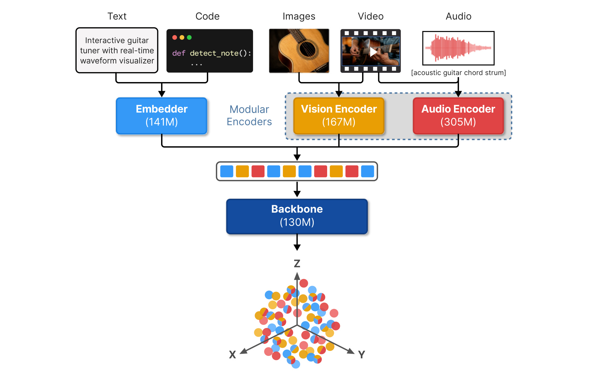
Figure 1 从左到右展示文字、代码、图片、视频与音频如何进入系统。文字与代码由同一个嵌入器处理，视觉和声音各有编码器，之后都变成共享骨干可读取的软 token；图底部的彩色点云表示最终统一空间。图中的文字嵌入器约 141M 与后续骨干约 130M 合成约 271M 的文本路径，不能把“骨干”窄义参数误读成完整文本模型大小。图像和视频共用视觉编码器，声音使用另一模块，所以只做文本检索时可以不加载这些模态参数。这里的统一不是对齐后各走各的塔，而是先转换到同一个隐藏维度，再把交错内容放到双向序列里一起理解。对搜索系统而言，查询和候选可以采用不同模态组合，但输出都能进入同一近邻索引；是否真能在具体业务混合查询上稳定工作，还需检验任务前缀、内容长度和模态缺失情况。
逐层嵌入 PLE 给每层一条来自原始输入的残差通道。以往实现还会维护专门的词元查找表，但它对非文本软 token 没有直接信号，也增加存储。本文保留由主输入得到的逐层投影，去掉额外查表。每层先投影原始输入，以当前层隐状态产生门，再把两者逐元素结合后加回当前层。相应关系为：
符号解释：$l$ 是层索引，$T_{in}$ 是进入主干的共享输入，$p_l,g_l,u_l$ 是可学习线性投影，$H_l^\prime$ 是该层原有输出，$G_l$ 为经 GELU 的门控表示，$\odot$ 表示逐元素乘法，$H_l$ 送往下一层。这里的门不是必须在零到一之间的概率，GELU 也不是 sigmoid；其作用是根据当前层上下文选择性使用原始输入信息。训练时学习这些映射，推理时保留同样路径。去掉词表并未删掉逐层输入本身。
2.2 有序模态片段与任务化输入
输入被组织为一串有序片段，每段是文字、图像、音频或视频。文字走普通 token 嵌入；图像由 patch 大小 16 的视觉 Transformer 编码，再经空间池化与线性适配器转换成 512 维软 token，图像边界由专用标记包围。音频先以梅尔滤波特征进入两层下采样卷积及十二层 Conformer，以每 40ms 一个 token 的节奏得到每秒 25 个软 token，再投影到共享维度。视频通常先按每秒一帧采样，最长使用 32 帧；更长视频可选择前段截断或均匀采样。若同时保留声音，帧与其后音频片段交错，并加入时间戳，以免模型把相隔很远的内容当作直接相邻。这些处理把媒体转成可计算的序列，但没有消除帧采样遗漏、长音频截断和视觉池化的信息损失。
训练图像默认 280 个视觉 token，视频每帧默认 140 个；推理可配置 70、140、280、560 或 1120。完整输入带开始与结束标记，训练时总长度可到 8192。查询和目标还可以有不同的任务前缀，例如检索查询与文档正文采用不同格式。论文式（1）明确了前缀属于编码输入的一部分：
符号解释：$x_i^q$ 是第 $i$ 个查询，$x_i^{p+}$ 和 $x_i^{p-}$ 是正、负目标，$t_q,t_p$ 是任务前缀，$\oplus$ 表示拼接，$q_i,p_i^\pm$ 是对应表示；论文式（1）省略了前述最终单位化记号。任务前缀帮助一个共享模型区分“相似度匹配”“搜索”或分类等需求，而非让所有输入只按表面相似性聚合。前缀、片段顺序和帧预算都属于部署协议，替换编码器时应连同这些条件一起复核。
2.3 对比目标、空间扩散与教师匹配
训练目标包含三组互补信号。对比目标把查询拉向正确候选，同时区分困难负例、批内负例及同塔负例。同塔负例比较查询与查询、目标与目标，避免二者分别缩进互不重叠的子空间；作者去掉前代的困难度加权，因为噪声或弱相关正样本在训练早期可能被放大，并加剧不同模态任务之间的梯度尺度不平衡。核心式（2）和去重式（3）为：
符号解释：$B$ 是批大小，$\tau$ 为温度，$\operatorname{sim}$ 为余弦相似度；$Z_i^{HN}$ 汇总困难负例指数相似度，$Z_i^{IB}$ 汇总其他样本的正目标，$Z_i^{STN}$ 汇总同塔相似度。分母中的候选越难区分，正例要获得更大的相对分数才能降低损失。同塔项不是多生成一组标签，而是利用当前批的表示约束空间结构。去重掩码用于防止重复查询或共享正目标被错当负样本：
符号解释：$\mathbf1_{TN}(i,j)$ 为有效负例指示函数，零表示这对样本不应进入负例和。一批中可能有相同问题的不同表达或同一文档对应多个问题，未处理的重复会让优化目标相互矛盾；这里论文给出的是相等条件的去重规则，并不等于能识别所有语义假负例。若监督本身是有顺序的多个正例，则还使用扩展的列表目标，以每个位置的正例对比其后更低排序的正例及负例：
符号解释：$P$ 是有序正例个数，$r$ 为当前顺序位置，$Z_{i,r}^P$ 是该位置正例的指数相似度。式（4）把更细的相对排序信号放进同一个表示学习过程，而非仅从列表里抽一个正负对；论文还使用较小的平方 hinge 惩罚校准绝对相似度，以服务阈值任务。该式的批内负例包含其他查询下的正负目标，且同样需要去重，因此不能把它直接当成没有额外负例的普通列表概率。
空间扩散正则不依赖单个查询的相关性，而希望随机向量对的二阶统计接近均匀球面，缓解表示坍缩在狭窄锥内。教师匹配则直接对齐学生与 Gemini Embedding 2 的向量，而不只模仿相关性分数；教师向量先截到学生目标维度并重新单位化，困难负例也参与匹配。论文式（5）与式（6）为：
符号解释：$q_i$ 和 $p_i^+$ 都是单位向量，平方内积惩罚随机样本对过度相似，分母按非自配对数量归一。这只用了原始全局正交正则的二阶项，作者观察到均值项也能随之改善；它鼓励充分利用空间，但并不证明所有任务下最优语义都严格各向同性。单位空间也有助于量化和近邻索引，实际近邻召回仍受索引算法与向量维度影响。
符号解释：$u$ 依次取查询、正目标和困难负目标，$\tilde u_i$ 是截断并单位化后的教师向量；多个困难负目标会在该项内部平均。直接匹配让学生继承教师的跨模态几何，但教师的最优空间未必适合小模型和较低维度，所以它只主导前期训练。MRL 又把三种损失应用于重叠的前缀子维度，让 768、512、256、128 维都有可用表示；这是训练时的结构性约束，不能假定对任意未经 MRL 训练的模型截断都能得到相同效果。
2.4 从文本课程到多模态微调和量化
模型先从 Gemma 4 初始化，再经历文本预微调、多模态预微调及多模态微调三个阶段，合计约 2.9T token。第一阶段约 300B，主用蒸馏并保留小权重对比目标；第二阶段约 2T，只用蒸馏，引入图片、声音、视频、文档及混合任务；第三阶段约 600B，完全替换蒸馏为对比学习，并加入空间扩散与 MRL，转向更高质量的工具检索、音频描述、视频排序、商品视觉搜索等任务。视觉编码器在两个多模态阶段共同训练，音频编码器则从 Gemma 4 直接复用并冻结。阶段切换让早期大批次学习稳定空间，后期较小学习率与批次适应学生容量，不能只按总 token 数理解配方。
微调后，作者把同一次训练轨迹的最终与较早检查点做等权平均，以缓解部分任务过拟合；这没有额外训练多个不同配方模型。量化是后续独立尾段：从合并后的浮点模型初始化并蒸馏出量化感知检查点，骨干提供按块或按通道 int4，视觉编码器使用权重与激活 int8，音频沿用原模型不同层簇的混合位宽。推理时不需要教师、训练负样本或损失，只执行输入编码、共享主干和池化投影；部署方可以分别选择加载模态、视觉预算、输出维度与权重精度，但这些选择会对不同任务造成不同程度退化。
3. 实验结果
3.1 评测工作点与量化边界
作者在文本、代码、图像、视频、视觉文档和声音等七套基准上评估。文本主要比较小于 1B 的模型，MMEB-v2 因小模型稀少放宽到小于 2B；仅比较单向量模型，排除多向量系统，且不纳入训练数据覆盖超过评测集四分之一的模型。对多数对手使用公开排行榜结果，对直接可比的 Jina 模型另外运行官方实现核验。参数数目按该任务实际使用的模态模块计算，因此图文 439M 与纯文本 271M 是不同成本工作点，不宜只看总模型名。
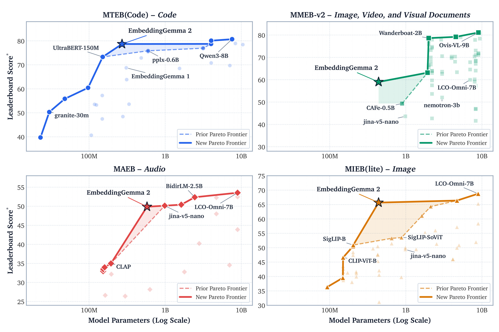
Figure 2 是原论文的四子图组合，横轴为模型参数的对数尺度，纵轴分别是代码、多模态图像视频文档、音频和图像基准的平均得分。EmbeddingGemma 2 的位置体现出较小规模仍能保持较强整体质量，图中前沿连线表达的是在所画模型与该统计口径下的效率关系。它不意味着所有单项最好，也不能把四张子图的纵轴数值拿来彼此比较，因为任务集合和汇总方式不同。代码与多数视觉任务的规模收益很清楚，音频附近仍有性能相近或更高的模型；同样，图中用参与任务的参数统计，而不是宣称完整全模态运行没有额外代价。对工程评估，图能帮助缩小候选范围，真正选型仍应补齐输入长度、硬件、批大小和端到端编码时延。
图的前沿还受比较集合限制。正文对文本与多数模态选取十亿参数以内模型，视觉混合基准放宽到二十亿，并排除多向量系统，目的是让存储和相似度计算形式相近。因此前沿只是这套单向量候选中的工作点；如果业务允许跨编码重排或多向量检索，质量与成本的最优边界可能不同。
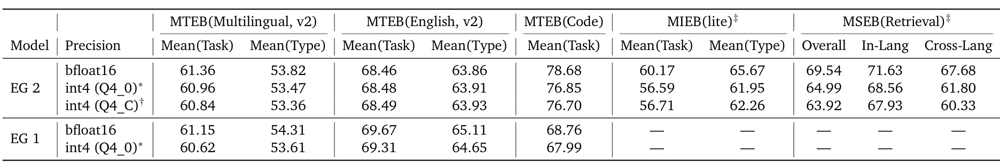
Table 1 同时给出两代模型及两种 int4 检查点。浮点版的多语言 Mean(Task) 从 61.15 到 61.36，提升很小；Mean(Type) 却从 54.31 降到 53.82，说明不同任务加权会改变总体判断。英文 Mean(Task) 从 69.67 降至 68.46，Mean(Type) 从 65.11 降至 63.86，不能把“更强多模态”写成文本全面升级。代码从 68.76 提高至 78.68，是 9.92 个分数点，约 14.4% 相对提高，不能混写成 9.92% 相对增益。量化的英文分数接近浮点，但视觉和语音列存在不同评测 harness，表下注释已经声明口径差异，不能把所有差值都归因于量化本身。作者另报 Pixel 11 Pro 上 Q4_C 的文本、图文、全模态峰值内存为 191、447、567MB，包含运行时编译开销；这是特定设备实现的峰值，不是模型下载大小，也不是其他手机的保证。
另一个判断是，量化策略本身也分模态：表中 int4 主要指骨干，而非图像与声音所有层都变成四比特。拿全模型统一四比特的文件大小估算内存，或把这些数字直接与另一运行栈比较，都会改变原实验的含义。对于文本代码两列，量化后的代码下降比英文明显，也应分任务验证。
3.2 架构和目标切换消融
以下消融均使用中间配方，作者明确说明其数值不代表最终发布模型。比较应限制在同一张表内，不能把其中的 55.46 与最终 MMEB 的 59.01 直接解释成某一个模块带来 3.55 分。这样的边界使实验既能支持局部决策，也不被错误叠加成完整收益归因。
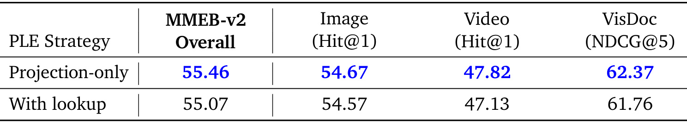
Table 2 比较只用投影与保留专有查找表的 PLE。去掉额外查表后 MMEB 总分为 55.46，对照为 55.07；图像 54.67 对 54.57，视频 47.82 对 47.13，视觉文档 62.37 对 61.76。它说明在这个配方下，更复杂的文本词表残差并未带来多模态优势，省去它反而小幅改善。机制上，连续模态没有天然对应的离散词元索引，从共享软输入产生逐层表示更统一；不过表中并没有逐一隔离“参数减少”和“模态一致性”的因果贡献，因此这仍是受控配置比较，不能推出任何模型上删表都必然提高质量。它也不代表完全删除 PLE，只是删去专门的查找分支，逐层投影与门控仍然保留在网络里。
从输入路径看，额外词表只能给离散文字 token 提供附加信息，而视觉与声音来自连续特征，它们原本没有同一套查找索引。投影方案让每层直接读取经过适配器对齐的原始软输入，从而让不同模态拥有相同形式的残差入口；这解释了为什么参数节约并未必然导致质量损失。表格中总分提高只有零点三九，图像提高零点一，不能把微小差异写成数量级突破。作者也提到文本侧观察到相近改善，但本表只展示多模态数据，若要量化文本收益仍需相应结果。更审慎的复现应固定初始化和训练数据，记录参数与内存减少量，再分别检验文字、图片和混合查询，避免把更简单实现等同于所有任务更好。对推荐内容编码，这个消融提供的优先级是先确保连续模态在共享骨干中有一致信息通道，再决定是否保留文字专属的额外容量；它没有证明物品语义或用户偏好已经得到更好的建模。
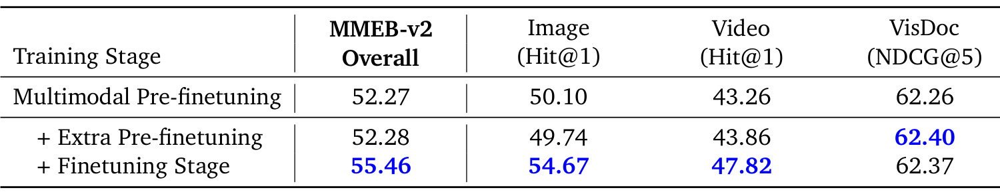
Table 3 从同一多模态预微调检查点出发，比较额外预微调与转入最终微调配方。起点总分 52.27，继续蒸馏为 52.28，切换微调为 55.46；图像从 50.10 到 54.67，视频从 43.26 到 47.82，而视觉文档由 62.26 到 62.37，变化很小。这个结果支持“教师匹配遇到平台后，换目标比单纯延长原训练更有效”的判断。额外蒸馏采用约计算等价的持续时间，但批大小更大，作者比较的是阶段配方，而非只切一个损失开关的完全单因素试验。因此可以说后期组合优化更适合学生，不应把全部增益仅归因于空间扩散项或某一种负例。视觉文档没有同步大涨，也提醒我们不同模态的剩余瓶颈并不一致。
这组实验还把“多训练一点”的常见解释放到台面上检验。继续蒸馏的版本没有随步数明显改善，说明在已有教师匹配目标下，学生剩余误差并非都能靠同样的监督消除。切换微调后，模型可以依据正负关系重新排列邻近样本，同时用正则与子维度训练塑造输出分布，这可能更符合自身容量约束。但这种解释不意味着教师信息没价值：两个版本都已经从教师获得初始化空间，没有那个起点就不是表中同一实验。表里的文档分数甚至是继续蒸馏六十二点四零略高于最终微调六十二点三七，虽然差很小，也足以否定所有类别都会同步提高的强断言。应用到推荐蒸馏时，可以把这视为一个待验证训练策略：先迁移全局结构，再用业务正负关系适配学生，而不是简单延长模仿阶段；最终仍需控制训练量、负样本和数据质量，才能判断收益来自哪一部分。
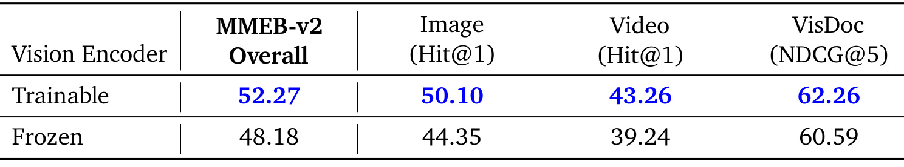
Table 4 比较在文本预微调后，多模态预微调期间让视觉编码器训练或冻结。训练版本的总分为 52.27，冻结为 48.18；图像是 50.10 对 44.35，视频 43.26 对 39.24，视觉文档 62.26 对 60.59。两个实验都从尚未更新视觉编码器的文本检查点开始，避免“冻结版本已经提前吃到视觉训练收益”的混淆。结果表明强视觉底座仍需要适应最终嵌入目标，尤其图像与视频收益明显。它不直接回答音频解冻的收益，因为论文中的音频编码器始终冻结；也不意味着冻结方案毫无工程价值，冻结可以降低训练成本并保持旧向量库兼容，而本文更侧重统一空间质量。若业务已经有大规模索引，重新编码成本应与质量收益一起核算。
视觉分支是否解冻，经常取决于目标是保持原视觉特征还是得到新的检索空间。生成式多模态模型里，冻结视觉编码器有时已经足够，因为后续语言模型可以用较大容量解释它；这里的最终输出只是一个固定向量，信息必须在有限空间中直接满足近邻比较，因此让视觉特征适应目标可能更重要。表中的视觉文档差距约一点六七，小于图像五点七五与视频四点零二，也说明需要适配的程度随任务变化。值得保留的是实验起点的设计：从文本阶段出发，两个分支面对同样未适配的视觉编码器，因此结果比在最终检查点上临时冻结一次更能回答训练期的必要性。不过，表没有给出解冻带来的完整训练显存和时间增幅，也没有区分视觉适配器与视觉主体各自贡献；成本敏感复现应补上这两项，不能只看质量一列。
3.3 视觉 token 预算的非单调效应
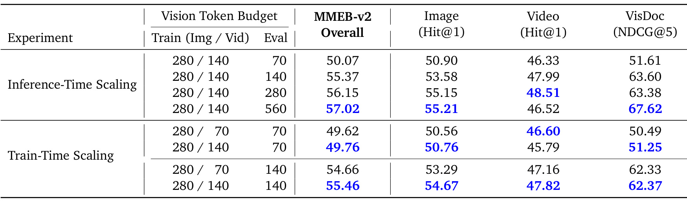
Table 5 上半部分固定训练预算为每图 280、每视频帧 140 token，在推理时统一使用不同预算。总体得分随 70、140、280、560 token 从 50.07、55.37、56.15 到 57.02 增长，但视频从 48.51 的 280 token 工作点降到 46.52，视觉文档则在 560 token 达到 67.62，明显高于 280 时的 63.38。作者认为细节密集的文档更需要高分辨率，而过长视频序列可能稀释注意力与均值池化表示；这是解释性假设，表格本身证明的是该实验范围内的非单调现象。下半部分又比较训练视频预算 70 与 140，但上下两部分使用不同中间配方，不能跨组拼数字。较小训练预算能改善低预算下的视频成绩，却会损失部分图像与文档能力，因此训练预算不只是一个可免费降低的开关。实际部署可按文档、普通图像和视频分别设预算，先确定任务信息密度，再评估吞吐；不应把“模型支持 1120 token”理解为所有场景都该使用最高值。
下半部分在低预算评测时，七十 token 训练的视频分数为四十六点六零，高于一百四十 token 训练的四十五点七九；但同一个低预算条件下，图像与文档反而略低。这一交叉现象比单独看总体分更有信息：降低训练预算似乎能让模型熟悉压缩后的视频表征，却未必保留对其他视觉输入有益的空间细节。当评测预算回到一百四十时，高训练预算的视频和总体分数又较好，因此没有一个低预算配方在所有工作点占优。推理侧从一百四十增到二百八十，文档分数还略有下降，直到五百六十才明显提高，提醒我们这些是离散实验点，并非可以连续外推的缩放定律。论文虽然列出支持一千一百二十 token 的接口，但本表没有给出该预算的评测，不能把支持范围当成已验证的性能曲线。
3.4 最终模型的文本、代码与视觉结果
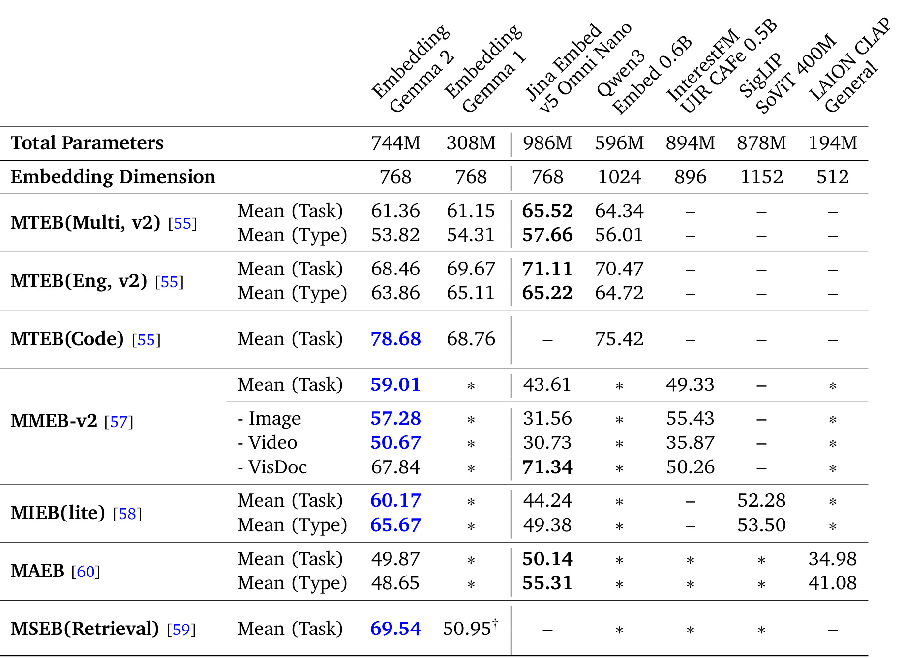
Table 6 将最终浮点模型放到多种同行旁边。MMEB-v2 总分 59.01，高于 Jina 同行 43.61 和 InterestFM 49.33；但视觉文档 67.84 低于 Jina 的 71.34，说明总分优势没有覆盖每个分组。文本多语言 61.36 也低于表内 Jina 的 65.52 与 Qwen 的 64.34，英文 68.46 低于二者的 71.11 与 70.47。音频 MAEB 的 Mean(Task) 为 49.87，略低于 Jina 的 50.14；Mean(Type) 则是 48.65 对 55.31，差异不能被“只差约零点二”掩盖。表中的星号表示不支持该模态，短横线表示没有得分，不能当零分平均。该总览最适合证明的是同一小模型覆盖多模态且整体具有竞争力，而非对所有专用器件全面替代；后面分模态表可以定位应该保留专用模型的场景。
表的两种参数记法也值得同时保留。顶行完整模型列出七点四四亿参数，用于描述可加载组件的总规模；而分模态排行榜按实际使用组件统计，代码只计文本路径，视觉只计图文路径。若一个在线任务同时处理声音和画面，它不能只支付图文路径的成本。另一方面，教师模型参数没有在声音对照表公开，也不能据此声称学生在同质量下具有确定倍数的算力优势。公开排行榜的基线分数来自不同项目，作者对直接同行做了复核，但没有对每一个对手重新训练，所以原始数据混合、任务前缀和评测版本仍可能影响比较。最可靠的使用方式是把这一总览当作候选筛选证据，再在相同索引、相同查询集合和相同硬件上做控制实验。特别是英文与视觉文档已有更高同行时，如果业务主要服务这两类需求，统一覆盖带来的便利是否值得质量取舍，应由目标任务权重决定，并且需要记录每个任务族的质量下限。
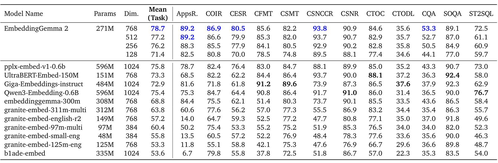
Table 7 把代码检索进一步拆为十二类任务。768 维平均为 78.7，512 维 77.2，256 维 76.2，128 维 71.4。256 维相当于原始向量元素数的三分之一，在同精度存储时有明确容量收益，但平均分仍损失约 2.5 分，不能说压缩完全无损。逐列看，文本到 SQL 从 72.5 降到 61.1 的 512 维工作点，比某些普通代码搜索任务敏感得多；这说明较短向量是否足够依赖具体任务。它在平均分上超过多种更大代码模型，同时也存在个别列落后，例如某些代码反馈或问答任务有同行更好。因此，将其接入代码 RAG 时，应同时测真实代码语言、仓库结构、查询类型与截断维度，而非拿一个平均分替代全部验证。表里的四舍五入与前表精确到两位小数的值是一致口径，不应当成两组不同结果。
维度减少主要节约候选向量库存储和索引代价，不会按同样比例减少整个编码器的计算。若查询编码才是主要延迟瓶颈，缩短输出未必带来同等收益；若候选库达到很大规模，减少向量维度则可能显著影响存储与近邻检索成本。两种瓶颈应分别测量。
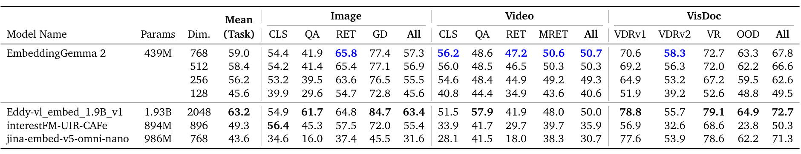
Table 8 以实际图文路径约 439M 参数比较小于 2B 的模型，768 维总分为 59.0。约 1.93B 的 Eddy 模型得分 63.2，说明更高总体质量仍有空间；EmbeddingGemma 2 的优势在于更小规模与若干分组的较好表现，例如视频总分 50.7 略高于 Eddy 的 50.0，而视觉文档 67.8 低于其 72.7。维度缩小到 256 时总分 56.2，128 时降到 45.6，比代码场景的下降更明显。视觉文档从 67.8 降至 49.5，也提示复杂版面和细粒度证据可能需要较高表示容量。这里不是“所有视觉问题都能用一个小向量解决”，而是在单向量成本约束下展示覆盖能力；复杂定位或长文档问答仍应考虑更高预算、多向量或后续重排，并把这些额外成本计算进去。
表中的视觉问答也采用嵌入评测协议，而不是让模型自由生成长回答，不能把相应分数等价到通用视觉语言助手的回答正确率。对于文档检索，定位正确页面和在页面内读对数值仍是两个步骤；单向量命中之后，后续读图或重排链路应另设验收指标。
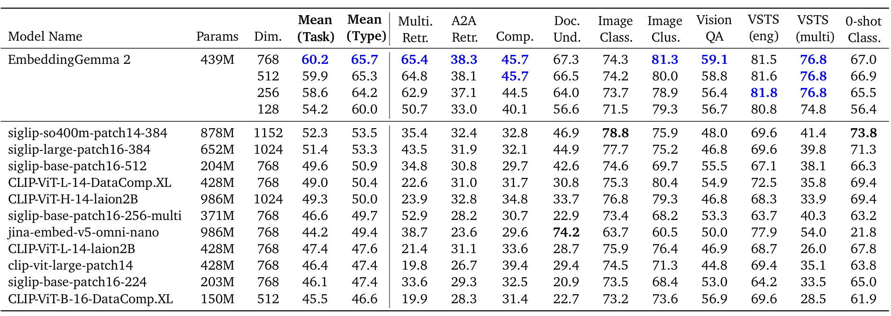
Table 9 的 MIEB(lite) 结果区分按任务与按类型汇总。768 维分别为 60.2 和 65.7，对照 SigLIP 878M 为 52.3 和 53.5，平均优势明显；128 维仍为 54.2 和 60.0，保持了相当竞争力。可是某些单项并没有优势，例如图像分类列里部分专用模型高于它，零样本分类也存在更高结果。这与正文强调的多语言检索、视觉语义相似度等强项可以同时成立。表中有的指标是检索，有的是分类或聚类，同一行的不同列不能按数值大小判断“哪类能力更强”，因为评价量纲和任务难度不同。对推荐内容冷启动，值得借鉴的是用同一表示覆盖图文检索及内容分组，再把真正关心的商品细节、跨语言查询和长尾类别单独验证；本表没有用户行为监督，不提供个性化效果证据。
原始表还显示输出维度降低并不让每一列严格单调变化，部分语义相似度列在较短表示下近似持平或略升。这属于特定任务与统计波动可以出现的结果，不应因此反过来宣称截断本身是一种普遍增强方法。应在固定随机性和足够样本上检查稳定性。
3.5 原生音频、语义偏重与局部失败
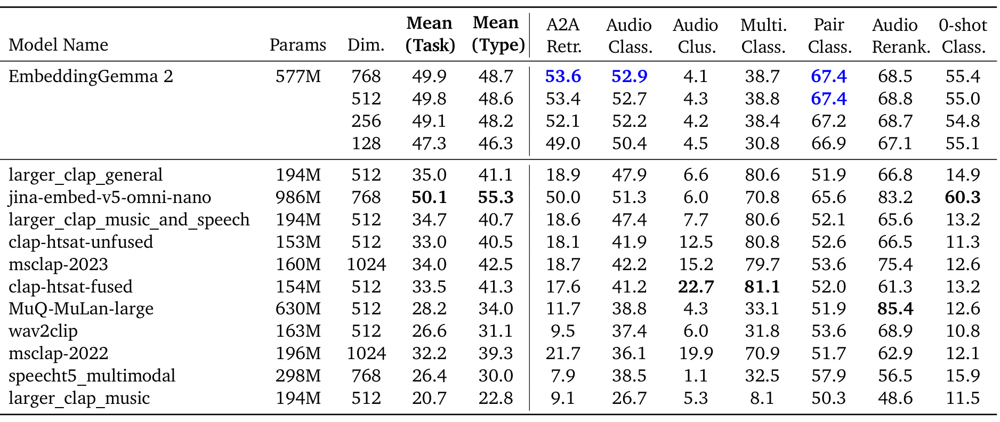
Table 10 展示约 577M 音频文本路径的 MAEB 结果。768 维平均任务分 49.9、平均类型分 48.7，与 Jina 的 50.1、55.3 相比，前者接近而后者仍有差距；这说明不同任务族的平衡性值得关注。它在任意到任意检索和音频分类表现较好，但音频聚类分数很低，某些多语言分类或重排任务也落后专用模型。论文特别指出，零样本按说话者性别聚类的分数仅 0.40，而使用线性探针的性别分类有 66.40；两者是不同数据和任务，不是一个可以直接相减的受控恢复实验。合理解读是最终单向量较偏向语义组织，声学属性可能仍存在于表示中但并未自然形成零样本聚类结构。推荐语音内容时，这种偏好可能有利于主题匹配，却未必适合音乐音色、说话人检索或环境声音细粒度分类，仍需目标专用数据评估。
这种局部失败说明统一训练可能让同一种声音的不同属性获得不均衡的可读出性。检索问题问的是内容语义，分类或聚类问题却可能问声音来源、情绪或声学形态；两者不能只靠一个平均音频分数互相担保。评估音频内容库时应明确希望相似的是主题、词义还是声学特征。
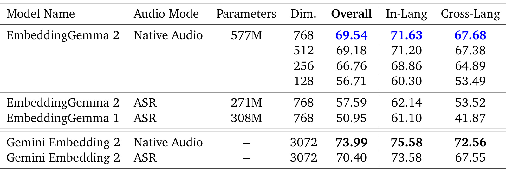
Table 11 对比同一学生模型的原生音频与先转写后文本嵌入路线。768 维整体 MRR@10 为 69.54 对 57.59，差 11.95 个指标点；同语言为 71.63 对 62.14，跨语言 67.68 对 53.52。256 维原生音频仍有 66.76，超过完整维度的 ASR 路线，说明保留原始声音信号带来的价值并非单纯加大输出向量。可是 128 维已降到 56.71，略低于完整 ASR 的 57.59，极端压缩仍会改变最优选择。教师 Gemini 的原生路线为 73.99，学生没有超过教师；ASR 的具体识别误差、口音分布和任务差异也会影响这类结论。该表最清晰地支持了引言关于“文字转写会丢信息”的问题设定，但没有证明所有环境声音任务都同样获益，也不能排除经过任务适配的更强 ASR 在某些场景缩小差距。
原生音频路径比转写后的文本路径多加载声音编码器，因此这并不是同参数预算下的纯输入模态比较。它证明端到端保留声音信息有质量价值，但若设备只能承受文本模型，转写路线仍可能是可行退路。还应把识别服务本身的时延、隐私和网络可用性计算进去，才能公平评估整条链路。
4. 总结
EmbeddingGemma 2 的主要贡献，是把小型共享骨干、可选模态编码器、目标逐阶段切换、MRL 和量化配成一个覆盖面较广的单向量表示系统。模型没有只靠更大参数推动结果：额外 PLE 词表被删掉，视觉编码器却参与训练；前期依赖教师，后期允许学生偏离教师；输入预算和输出维度又被保留为独立调节项。对于工程读者，这些选择比单个平均分更值得复用，因为它们说明了该在哪里共享、该在哪里适配，以及为什么模型成本应该按输入模态和任务协议具体核算。
其证据边界至少有四方面。首先，模型发布的广覆盖分数不等于业务上线收益，特别是没有个性化推荐或 RAG 最终问答实验。其次，文本并非全面优于前代，英文与多语言按类型平均均出现退化，一些声音和视觉文档分组也有明显弱项。第三，消融是中间配方，表间不可直接拼接成模块收益；量化比较里的不同 harness 还使部分数值口径不可比。第四，长媒体仍受帧采样、8192 训练长度和单向量池化约束，输入 token 增加甚至可能损害视频质量；完整覆盖一段长期用户视频历史仍不是本文已经完成的任务。
对于推荐系统，较直接的迁移是内容冷启动召回、语音搜索、跨语言图文检索和设备侧私有内容编码。接入前应先在同一候选库比较文本、图文和原生音频路线，固定召回数量并检验长尾、细节属性、跨模态组合和错误类型，然后再看排序是否获得额外信息。对大模型应用，它可以作为多模态 RAG 的检索底座或 Agent 记忆的内容索引，但最终回答质量需要端到端评测；把一个视频压成单向量后，时间段定位可能仍需更细粒度索引。模型文档可访问不代表所有运行栈已经适配，也不代表本轮已复现论文分数。
后续有三条具体路线。第一，在目标设备上联合测量模态加载、视觉 token、维度和量化的质量与时延曲线，特别是文档与视频分开设预算。第二，对旧向量库升级做兼容性评估：空间改变可能要求全量回填，不能因模型名字相近就混用两代向量。第三，检验语义偏向是否符合业务目标，加入音乐声学、说话人、商品细节或难负例分桶，观察平均分未暴露的失败。若这些步骤确认收益，再决定是否替代专用编码器、增加重排器或保留多路召回。还有一个后续方向是把表示器与下游目标联合训练。作者提出端到端 RAG、更多适合交错媒体的评测，以及利用未池化 token 构造重排或后交互系统；这些都是未来路线，不能计入本轮单向量结果。若研究者希望迁移，应该先保留本文的单向量基线，再增加一个清晰可归因的模块，分别报告新增资源和目标任务收益。对长时程 Agent 记忆，也应区分“保存整个事件的摘要向量”与“可定位证据片段的索引”，否则即使命中正确事件，回答仍可能找不到细节。统一模型减少了编码器种类，但任务边界、索引粒度、数据版本和失败诊断仍需要明确设计。本文最稳妥的判断是“小规模统一表示已具备实用候选资格”，而不是“一个向量已经解决所有多模态理解与个性化问题”。